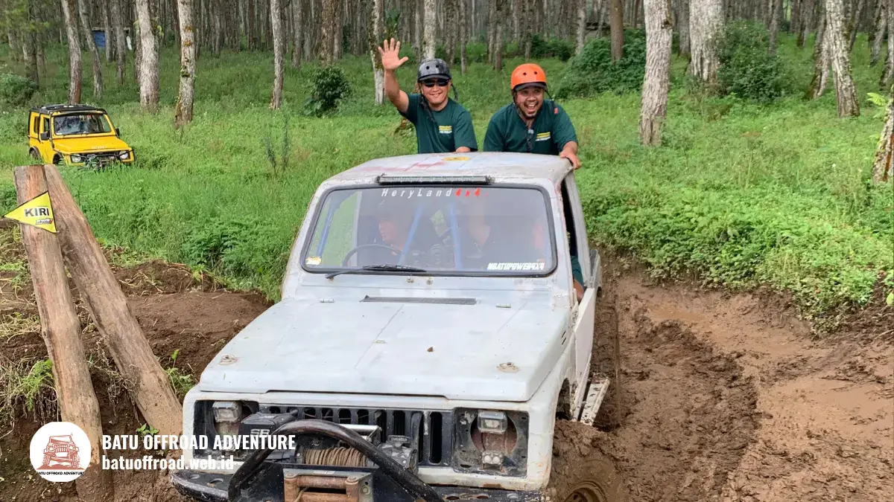

Daftar Persiapan Offroad Batu Malang: Barang Bawaan dan Tips Aman
Persiapan matang sebelum offroad batu malang meliputi persiapan fisik, perlengkapan pakaian yang tepat, barang bawaan esensial, dan pemahaman mendalam tentang aturan keselamatan untuk memastikan pengalaman yang aman, nyaman, dan maksimal.
- Persiapan fisik mencakup istirahat cukup, hindari alkohol, dan konsultasi kesehatan jika ada riwayat penyakit tertentu
- Pakaian yang tepat adalah pakaian yang menyerap keringat, jaket penahan angin, sepatu outdoor berkualitas, dan pakaian ganti lengkap
- Barang bawaan wajib meliputi perlindungan mata/debu, sunblock SPF 30+, obat pribadi, kantong waterproof, dan kamera dengan pelindung air
- Aturan keselamatan harus dipatuhi ketat termasuk penggunaan seatbelt, mendengarkan instruksi driver, dan tidak melampiaskan badan dari jeep
- Informasi keselamatan dan protokol akan diberikan dalam briefing pre-trip dari operator
Persiapan Fisik dan Kondisi Kesehatan
Persiapan fisik adalah fondasi penting untuk memastikan tubuh Anda siap menghadapi intensitas dan sensasi offroad.
Berikut langkah-langkah persiapan fisik sebelum hari H.
Istirahat dan Stamina:
- Istirahat cukup semalam sebelumnya (7-8 jam tidur minimal) agar stamina prima di hari trip
- Jangan begadang atau aktivitas berat sebelum keberangkatan
- Sarapan sehat namun ringan (nasi, telur, buah) agar tidak lapar atau mabuk di perjalanan
- Hindari konsumsi alkohol 24 jam sebelum trip untuk menjaga kesadaran dan stabilitas tubuh
Kondisi Kesehatan Khusus:
- Jika memiliki riwayat sakit jantung, darah tinggi, vertigo, atau penyakit kronis lainnya, konsultasikan dengan dokter sebelum offroad
- Peserta dengan kondisi mobility terbatas (cedera, disabilitas) perlu memberitahu operator terlebih dahulu untuk disesuaikan askomodasinya
- Peserta hamil trimester ketiga tidak disarankan mengikuti offroad karena risiko jatuh dan trauma perut
- Peserta dengan allergy tertentu (makanan, obat, kondisi lingkungan) harus memberitahu driver agar dapat diantisipasi
Mental dan Mindset:
- Siapkan mental untuk menghadapi medan menantang dan sensasi kejutan (jeep melenceng, bunyi keras, percikan lumpur)
- Berniat positif dan jangan bawa kekhawatiran berlebihan (operator dan driver telah terlatih menangani situasi apapun)
- Jika Anda takut ketinggian atau medan berat, start dari paket short trip atau rute easy terlebih dahulu
Rekomendasi Pakaian untuk Offroad Batu Malang
Memilih pakaian yang tepat adalah kunci kenyamanan selama offroad. Berikut rekomendasi detail untuk setiap item pakaian.
Gunakan Pakaian yang Menyerap Keringat
Pakaian yang menyerap keringat membantu tubuh tetap kering dan nyaman meski aktivitas fisik tinggi dan medan berlumpur.
- Material yang Direkomendasikan: Cotton 100% atau cotton blend (cotton 80% + polyester 20%), Material synthetic yang breathable (polyester, nylon dengan teknologi moisture-wicking)
- Jenis Pakaian: Kaos atau kemeja lengan panjang, Celana panjang yang sedang ketat (bahan khaki, denim, atau bahan adventure yang tahan robek)
- Tips Praktis: Ambil pakaian dalam warna yang tidak terlalu terang agar noda lumpur tidak terlihat mencolok, pastikan pakaian tidak terlalu longgar agar tidak tersangkut.

Contoh pakaian yang disarankan untuk offroad (jaket, sepatu outdoor, buff)
Siapkan Jaket Penahan Angin (Windbreaker)
Jaket penahan angin adalah perlengkapan penting untuk menjaga kehangatan saat melewati area tinggi, air, atau kecepatan jeep yang tinggi menciptakan angin kencang.
- Spesifikasi Jaket: Material waterproof atau water-resistant, tipe jaket sport atau windbreaker, ukuran pas di badan, warna netral.
- Fungsi Jaket: Melindungi dari hembusan angin, menjaga kehangatan, dan melindungi dari percikan air saat melewati crossing.
Pakai Sepatu Outdoor atau Sneakers yang Nyaman (Hindari Sandal)
Sepatu yang tepat adalah fondasi kenyamanan kaki selama perjalanan yang panjang dan medan yang berat. Pemilihan sepatu sangat penting karena kaki Anda akan bekerja keras sepanjang hari.
- Spesifikasi Sepatu: Upper Canvas/leather/synthetic, Sole rubber outdoor-grade dengan grip dalam, breathable.
- Tipe Sepatu: Hiking boots, running shoes, atau sepatu water-ready.
- Alasan Hindari Sandal: Sandal akan mudah terlepas, kaki tidak terlindungi dari lumpur/batu tajam, dan tidak memberikan support yang dibutuhkan.
Barang Bawaan Wajib Selama Persiapan Offroad Batu Malang
Selain pakaian, ada beberapa barang wajib yang harus Anda siapkan dan bawa untuk memastikan kenyamanan dan keselamatan maksimal.
Kacamata Hitam, Masker, atau Buff (Pelindung Debu)
Perlindungan mata, hidung, dan mulut dari debu lumpur adalah prioritas saat berkendara offroad di medan berlumpur.
- Kacamata Hitam: UV protection, lensa gelap, frame yang kuat, ikat dengan strap agar tidak terlepas.
- Masker atau Buff: Medical mask/N95 mask, atau buff/bandana. Bawa 2-3 buah untuk ganti.
Obat-obatan Pribadi dan Sunblock
Persiapan obat-obatan pribadi dan perlindungan kulit adalah bagian penting dari protokol kesehatan pre-trip.
- Obat-obatan Pribadi: Obat tidur, antasida, antihistamin, paracetamol, obat diare, dan obat pribadi rutin lainnya.
- Sunblock/Sunscreen: Minimal SPF 30 (lebih baik SPF 50+), water-resistant, aplikasikan 15 menit sebelum berangkat.
Baju Ganti dan Kantong Plastik Tahan Air
Baju ganti adalah perlengkapan yang sering terlupakan namun sangat penting karena Anda pasti akan kotor dan basah selama offroad.
- Baju Ganti Lengkap: Pakaian dalam bersih, kaos/kemeja, celana, kaos kaki, dan handuk kecil.
- Kantong Plastik Tahan Air: Waterproof bag atau dry bag plastik tebal ukuran medium (10-20 liter) untuk menyimpan ponsel, kamera, dompet.
Kamera Action atau Smartphone dengan Pelindung Air
Dokumentasi foto dan video adalah bagian penting dari pengalaman offroad untuk mengabadikan momen-momen berharga.
- Kamera Action (GoPro, DJI): Waterproof, mounted mudah di helm atau jeep, baterai cukup.
- Smartphone dengan Pelindung Air: Gunakan waterproof case plastik clear atau dry bag khusus smartphone.
- Tips Dokumentasi: Ambil momen dari sudut menarik, minta tolong driver untuk foto grup, dan backup foto ke cloud agar aman.
Aturan Keselamatan yang Wajib Dipatuhi Penumpang Jeep
Keselamatan adalah prioritas utama dalam setiap trip offroad. Berikut aturan keselamatan yang wajib dipatuhi oleh semua penumpang.
Penggunaan Seatbelt dan Perlengkapan Keselamatan:
- Gunakan seatbelt sepanjang perjalanan tanpa kecuali, meskipun medan terasa ringan
- Pastikan seatbelt terpasang dengan benar dan tidak ada celah
- Anak-anak harus menggunakan car seat atau booster jika tersedia
- Jangan melepas seatbelt saat jeep sedang bergerak
Posisi Duduk dan Gerakan Badan:
- Duduk tegak di tempat duduk yang telah disediakan
- Jangan melayangkan tangan, kepala, atau badan keluar jeep saat kendaraan bergerak
- Tidak diperbolehkan berdiri di jeep atau bergerak dari kursi ke kursi saat perjalanan
- Pegang pegangan (handle atau handrail) yang ada di jeep untuk stabilitas
Protokol Komunikasi dengan Driver:
- Dengarkan briefing keselamatan dari driver sebelum berangkat dengan penuh perhatian
- Patuhi setiap instruksi driver tanpa bertanya-tanya
- Jika ada kekhawatiran atau ketidaknyamanan, beri tahu driver segera
- Jangan mengganggu driver atau memintanya bergerak cepat dari normal
FAQ
-
Bisakah saya offroad dengan pakaian santai (T-shirt biasa dan celana pendek)?
Kurang disarankan. Pakaian santai tidak memberikan perlindungan cukup dari debu, lumpur, dan percikan yang sering terbang selama offroad. Gunakan pakaian panjang (kaos lengan panjang atau kemeja, celana panjang) dan jaket untuk perlindungan maksimal. -
Apakah operator menyediakan perlengkapan keselamatan lengkap atau saya harus bawa sendiri?
Operator menyediakan perlengkapan keselamatan dasar seperti seatbelt, roll bar, dan first aid kit di jeep. Namun, perlengkapan personal seperti kacamata, masker, dan sunblock harus Anda bawa sendiri. -
Bagaimana jika saya punya kondisi kesehatan khusus, apakah masih bisa offroad?
Tergantung kondisinya. Konsultasikan dengan dokter atau operator terlebih dahulu. Beberapa kondisi (hamil, jantung parah) memang tidak disarankan, namun kondisi lain (diabetes, tekanan darah tinggi) masih bisa dengan persiapan khusus dan pengawasan.
Artikel Terkait